Foto Utama
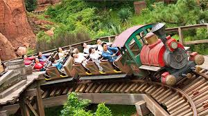
 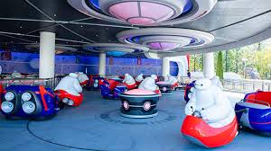
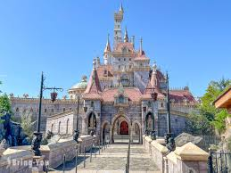
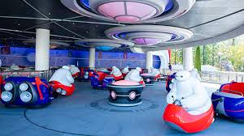
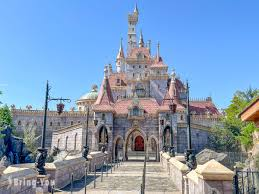
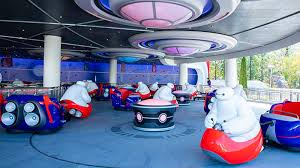
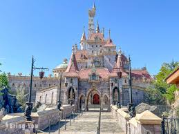
Yume to Maho no Oukoku (The Kingdom of Dreams and Magic)
Disneyland terletak di:
1-1 Maihama, Urayasu, Chiba 279-0031, Jepang.Tokyo Disneyland berlokasi strategis di tepi Teluk Tokyo, Urayasu, dengan akses transportasi sangat cepat dari pusat kota Tokyo.
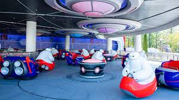
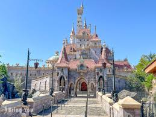
Wujudkan petualangan ajaib di Tokyo Disneyland dengan panduan wisata terlengkap yang dirancang untuk menyempurnakan perjalanan Anda. Kami menyajikan informasi terkini mulai dari harga tiket, jam operasional, hingga strategi menggunakan Disney Premier Access untuk menghindari antrean panjang di wahana populer seperti Fantasyland dan Tomorrowland. Dilengkapi dengan tips transportasi praktis dari pusat kota Tokyo dan rekomendasi kuliner musiman, website ini adalah asisten setia Anda dalam merencanakan liburan keluarga yang efisien namun tetap penuh keajaiban di jantung Jepang.
Dibuka pada 15 April 1983, Tokyo Disneyland merupakan taman bermain Disney pertama yang dibangun di luar Amerika Serikat. Proyek ini merupakan hasil kerja sama antara The Walt Disney Company dan Oriental Land Co., Ltd., yang berhasil mengubah lahan reklamasi di Urayasu, Chiba, menjadi destinasi wisata paling ikonik di Asia hingga saat ini.
Disneyland buka untuk kunjungan sepanjang tahun dengan jadwal berikut:
 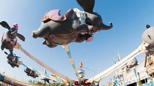
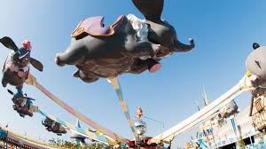

Pusat Tiket Disneyland Tokyo:
1-1 Maihama, Urayasu, Chiba 279-0031, Jepang
Telepon: +81 50-3090-2613
@reservation.tokyodisneyresort.jp
Website Resmi: www.
Untuk reservasi online: www.